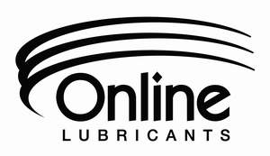
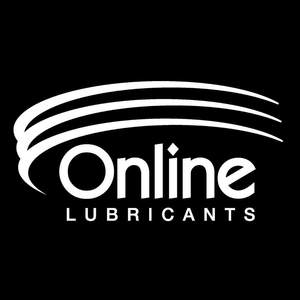

Trade Mark Journal No.2025/013 28 March 2025
UK00004168132 3 March 2025 (1,4)
Mark 1
Mark 2

Mark 3

Mark 4
- Class 1
- Antifreeze; Anti-freeze; Anti-freeze chemicals; Antifreeze mixes; Antifreeze for vehicle radiators; Ethylene glycol antifreeze; Propylene glycol antifreeze; Anti-freeze for vehicle cooling systems; Coolants; Anti-freezing liquids; De-icing fluids; Engine coolants; Brake fluids.
- Class 4
- Lubricants; Lubricating oils [industrial lubricants]; Industrial oils and greases, lubricants; Lubricants being gear oils; Metalworking lubricants; Automotive lubricants; Synthetic lubricants; Lubricants and industrial greases, waxes and fluids; Graphite lubricants; Drilling lubricants; Spray-on lubricants; Non-chemical additives for lubricants; Additives (Non-chemical -) for lubricants; Industrial lubricants; Lubricants for machines; Automobile lubricants; Lubricants in the nature of oils; Lubricants for cables; Lubricating oils and greases; Duct lubricants; Oil based lubricants; Solid lubricants; Cable lubricants; Lubricants for polymeric surfaces; Lubricating oils; Graphited lubricants; Lubricants containing low friction additives; Lubricants for plastic materials; Solid lubricants for textiles; Industrial oils for the lubrication of surfaces; Lubricants of synthetic origin; Synthetic lubricating oils; Lubricants for motor vehicles; Lubricants for use in industrial processes; Lubricating oils being hydraulic oils; Additive concentrates (Non-chemical -) for lubricants; Lubricants for use in the machining of metal; Lubricants for industrial machinery; Greases for the lubrication of cables; Lubricants for metallic surfaces; Oil well drilling lubricants; Lubricants for use on conveyors; Synthetic lubricants in the form of aerosols; Lubricants for aircraft engines; Lubrication grease for vehicles; Lubricating fluids; Linseed oil for use as a lubricant; Graphite as a lubricant; Greases for the lubrication of joints; Mineral lubricating oils; Lubricating oils for petrol engines; Lubricants for industrial apparatus; Lubricating oils for wheels; Lubricating oils for automotive apparatus; Automotive lubricating compounds; Motor vehicle lubricants; Leather (Preservatives for -) [oils and greases]; Preservatives for leather [oils and greases]; Non-chemical additives for gearbox oils; Lubricants for bicycle chains; Non-chemical additives to organic working fluids to act as in-situ lubricants; Lubricants for demounting pneumatic tyres; Automotive lubricants for car engines; Lubricants for mounting pneumatic tyres; Lubricants for metal working; Non-chemical additives for greases; Additives (Non-chemical -) for greases; Greases for the lubrication of exposed gears; Lubricants for agricultural implements; Lubricants for the protection of the chains of chainsaws; Lubricants of agricultural origin; Lubricating grease; Lubricating oil; Non-chemical additives for transmission oils; Lubricants for surgical apparatus; Oils for use as additives to heating oils; Lubricants for use with power cables; Lubricants having cleaning properties; Lubricating oils for use as a cutting fluid; Non-chemical additives for engine oils; Solid lubricants for industrial purposes; Lubricants for conveyor chains containing a corrosion inhibitor; Lubrication oils for industrial refrigeration apparatus; All purpose lubricants; Metalworking oils; Lubricants for conveyor belts containing a cleaning agent; Mineral oils and greases for industrial purposes [not for fuel]; Lubricants for conveyor chains containing a disinfecting agent; Lubricating oils for laser printers; Automotive greases; Lubricants for use in machine cutting; Lubricating graphite; Marine greases; Fuel; Diesel fuel; Biodiesel fuel; Fuel oil; Fuel for motor vehicles; Kerosene; Diesel oil; Kerosene for domestic heating; Non-chemical additives for oils; Additives (Non-chemical -) for oils; Graphite (Lubricating -).
ONLINE LUBRICANTS LIMITED